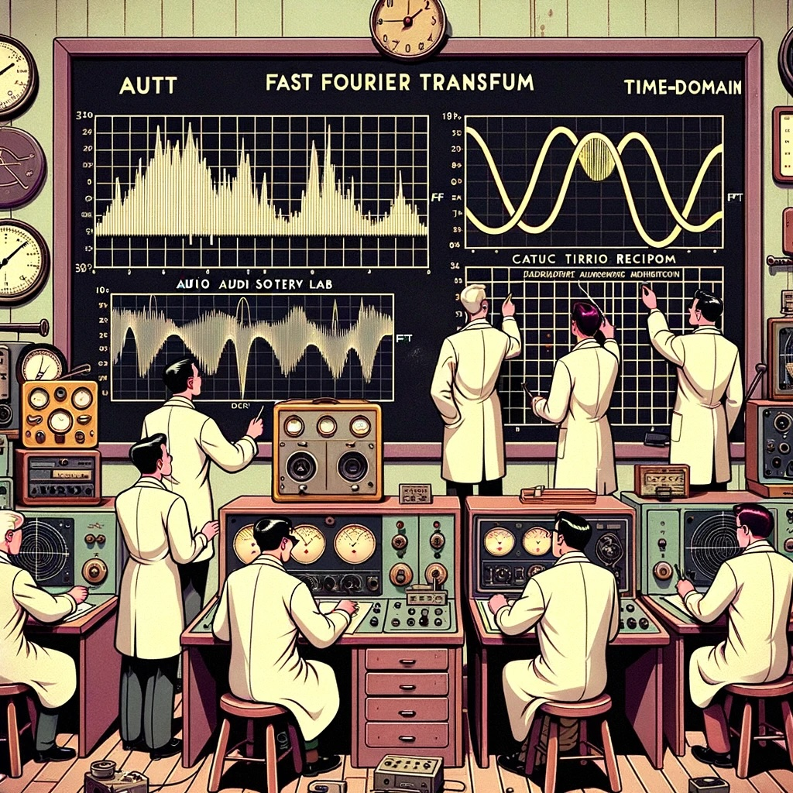
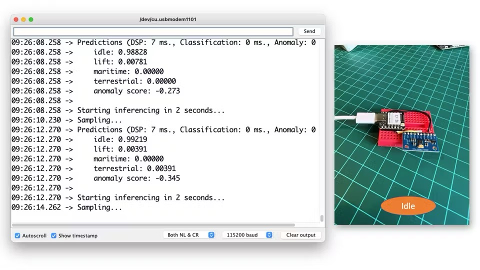
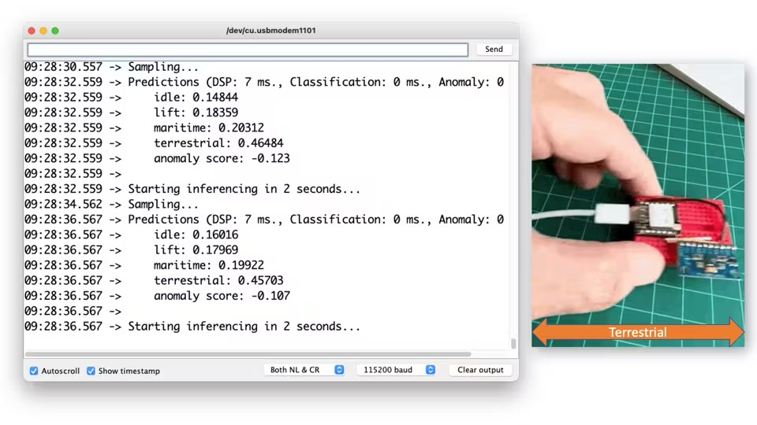
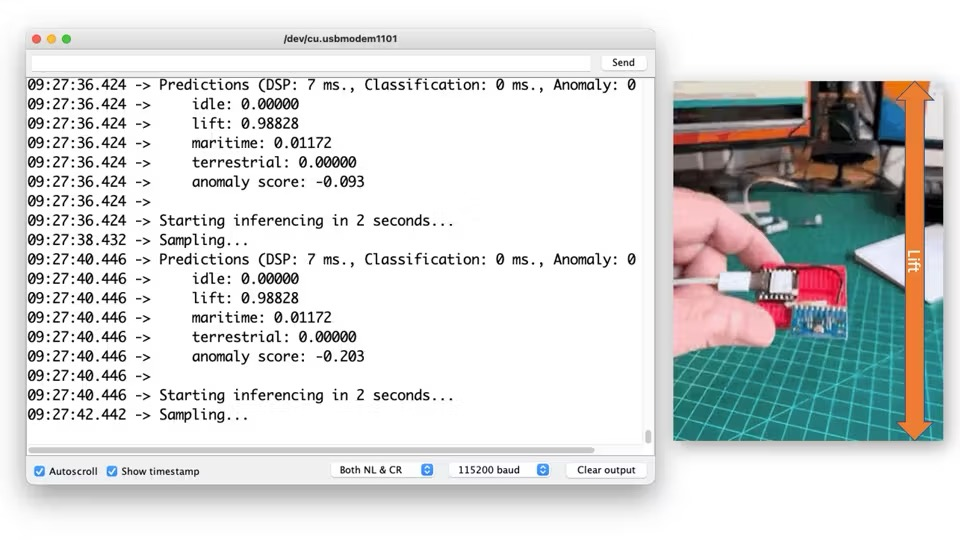
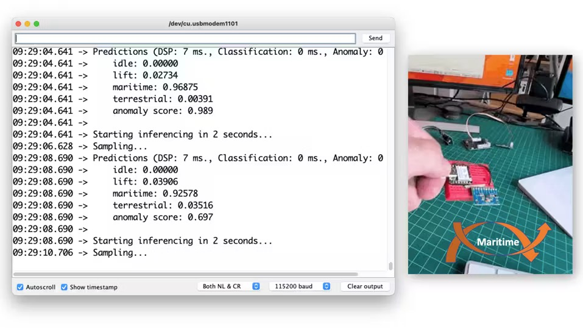
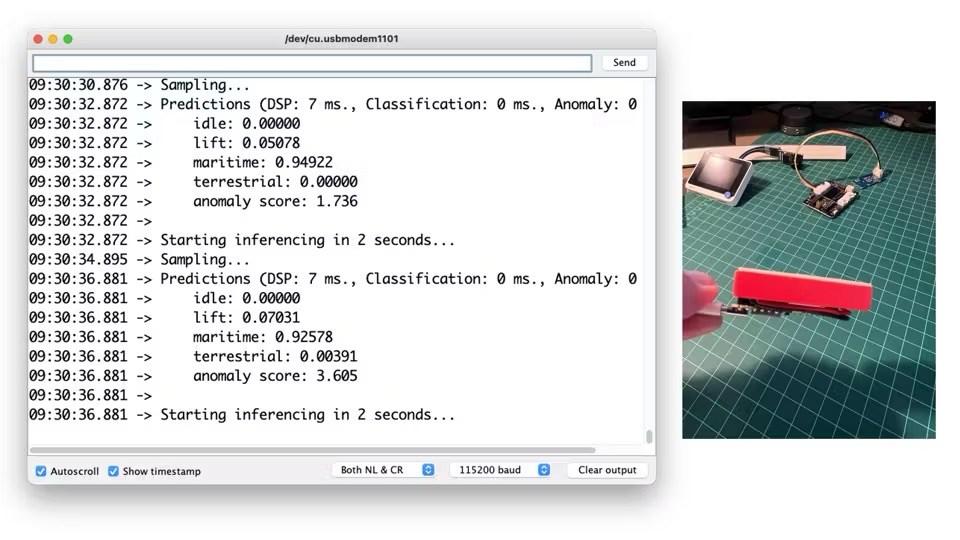

Classificazione del Movimento e Rilevamento delle Anomalie

Panoramica
The XIAO ESP32S3 Sense, con la sua fotocamera e microfono integrati, è un dispositivo versatile. Ma cosa succede se c’è bisogno di aggiungere un altro tipo di sensore, come un IMU? Nessun problema! Una delle caratteristiche distintive di XIAO ESP32S3 sono i suoi molteplici pin che possono essere utilizzati come bus I2C (pin SDA/SCL), rendendolo una piattaforma adatta per l’integrazione di sensori.

Installazione dell’IMU
Quando si seleziona l’IMU, il mercato offre un’ampia gamma di dispositivi, ognuno con caratteristiche e capacità uniche. Si potrebbe scegliere, ad esempio, ADXL362 (3 assi), MAX21100 (6 assi), MPU6050 (6 assi), LIS3DHTR (3 assi) o LCM20600Seeed Grove— (6 assi), che fa parte dell’IMU 9DOF (lcm20600+AK09918). Questa varietà consente di adattare la scelta alle esigenze specifiche del progetto.
Per questo progetto, utilizzeremo un’IMU, la MPU6050 (o 6500), un’unità accelerometro/giroscopio a 6 assi a basso costo (meno di 2,00 USD).
Alla fine del lab, commenteremo anche l’utilizzo dell’LCM20600.
MPU-6500 è un dispositivo di Motion Tracking a 6 assi che combina un giroscopio a 3 assi, un accelerometro a 3 assi e un Digital Motion ProcessorTM (DMP) in un piccolo package da 3x3x0,9 mm. È inoltre dotato di un FIFO da 4096 byte che può ridurre il traffico sull’interfaccia del bus seriale e ridurre il consumo energetico consentendo al processore di sistema di leggere i dati del sensore in modalità burst e quindi passare a una modalità a basso consumo.
Con il suo bus I2C dedicato al sensore, MPU-6500 accetta direttamente input da dispositivi I2C esterni. MPU-6500, con la sua integrazione a 6 assi, DMP on-chip e firmware di calibrazione runtime, consente ai produttori di eliminare la selezione, la qualificazione e l’integrazione a livello di sistema costose e complesse di dispositivi discreti, garantendo prestazioni di movimento ottimali per i consumatori. MPU-6500 è progettato anche per interfacciarsi con più sensori digitali non inerziali, come i sensori di pressione, sulla sua porta I2C ausiliaria.

Di solito, le librerie disponibili sono per MPU6050, ma funzionano per entrambi i dispositivi.
Collegamento dell’HW
Collegare l’IMU allo XIAO secondo lo schema seguente:
- MPU6050 SCL –> XIAO D5
- MPU6050 SDA –> XIAO D4
- MPU6050 VCC –> XIAO 3.3V
- MPU6050 GND –> XIAO GND

Installare la libreria
Si va su Arduino Library Manager e si digita MPU6050. Installare la versione più recente.

Scaricare lo sketch MPU6050_Acc_Data_Acquisition.in:
/*
* Based on I2C device class (I2Cdev) Arduino sketch for MPU6050 class
by Jeff Rowberg <jeff@rowberg.net>
* and Edge Impulse Data Forwarder Exampe (Arduino)
- https://docs.edgeimpulse.com/docs/cli-data-forwarder
*
* Developed by M.Rovai @11May23
*/
#include "I2Cdev.h"
#include "MPU6050.h"
#include "Wire.h"
#define FREQUENCY_HZ 50
#define INTERVAL_MS (1000 / (FREQUENCY_HZ + 1))
#define ACC_RANGE 1 // 0: -/+2G; 1: +/-4G
// convert factor g to m/s^2^ ==> [-32768, +32767] ==> [-2g, +2g]
#define CONVERT_G_TO_MS2 (9.81/(16384.0/(1.+ACC_RANGE)))
static unsigned long last_interval_ms = 0;
MPU6050 imu;
int16_t ax, ay, az;
void setup() {
Serial.begin(115200);
// initialize device
Serial.println("Initializing I2C devices...");
Wire.begin();
imu.initialize();
delay(10);
// // verify connection
// if (imu.testConnection()) {
// Serial.println("IMU connected");
// }
// else {
// Serial.println("IMU Error");
// }
delay(300);
//Set MCU 6050 OffSet Calibration
imu.setXAccelOffset(-4732);
imu.setYAccelOffset(4703);
imu.setZAccelOffset(8867);
imu.setXGyroOffset(61);
imu.setYGyroOffset(-73);
imu.setZGyroOffset(35);
/* Set full-scale accelerometer range.
* 0 = +/- 2g
* 1 = +/- 4g
* 2 = +/- 8g
* 3 = +/- 16g
*/
imu.setFullScaleAccelRange(ACC_RANGE);
}
void loop() {
if (millis() > last_interval_ms + INTERVAL_MS) {
last_interval_ms = millis();
// read raw accel/gyro measurements from device
imu.getAcceleration(&ax, &ay, &az);
// converting to m/s^2^
float ax_m_s^2^ = ax * CONVERT_G_TO_MS2;
float ay_m_s^2^ = ay * CONVERT_G_TO_MS2;
float az_m_s^2^ = az * CONVERT_G_TO_MS2;
Serial.print(ax_m_s^2^);
Serial.print("\t");
Serial.print(ay_m_s^2^);
Serial.print("\t");
Serial.println(az_m_s^2^);
}
}Alcuni commenti sul codice:
Notare che i valori generati dall’accelerometro e dal giroscopio hanno un intervallo: [-32768, +32767], quindi, ad esempio, se viene utilizzato l’intervallo di default dell’accelerometro, l’intervallo in G dovrebbe essere: [-2g, +2g]. Quindi, “1G” significa 16384.
Per la conversione in m/s2, ad esempio, si può definire quanto segue:
#define CONVERT_G_TO_MS2 (9.81/16384.0)Nel codice, è stata lasciata un’opzione (ACC_RANGE) da impostare su 0 (+/-2G) o 1 (+/- 4G). Useremo +/-4G; dovrebbe bastare per noi. In questo caso.
Acquisiremo i dati dell’accelerometro a una frequenza di 50 Hz e i dati di accelerazione saranno inviati alla porta seriale come metri al secondo quadrato (m/s2).
Quando si esegue il codice con l’IMU appoggiata sul tavolo, i dati dell’accelerometro mostrati sul monitor seriale dovrebbero essere circa 0.00, 0.00 e 9.81. Se i valori sono molto diversi, si deve calibrare l’IMU.
L’MCU6050 può essere calibrato usando lo sketch: mcu6050-calibration.ino.
Eseguire il codice. Sul Serial Monitor verrà visualizzato quanto segue:

Inviare un carattere qualsiasi (nell’esempio sopra, “x”) e la calibrazione dovrebbe iniziare.
Notare che c’è un messaggio MPU6050 di connessione fallita. Ignorare questo messaggio. Per qualche motivo, imu.testConnection() non restituisce un risultato corretto.
Alla fine, si riceveranno i valori di offset da utilizzare su tutti gli sketch:

Prendere i valori e usarli nella configurazione:
//Set MCU 6050 OffSet Calibration
imu.setXAccelOffset(-4732);
imu.setYAccelOffset(4703);
imu.setZAccelOffset(8867);
imu.setXGyroOffset(61);
imu.setYGyroOffset(-73);
imu.setZGyroOffset(35);Ora, eseguire lo sketch MPU6050_Acc_Data_Acquisition.in:
Una volta eseguito lo sketch precedente, aprire il Serial Monitor:

Oppure controllare il Plotter:

Spostare il dispositivo sui tre assi. Si dovrebbe vedere la variazione sul Plotter:

Il Progetto TinyML Motion Classification
Per il nostro lab, simuleremo sollecitazioni meccaniche nel trasporto. Il nostro problema sarà classificare quattro classi di movimento:
- Maritime (Pallet in navi)
- Terrestrial (Pallet in un camion o treno)
- Lift (Pallet movimentati da carrello elevatore)
- Idle (Pallet in magazzini)
Quindi, per iniziare, dovremmo raccogliere dati. Quindi, gli accelerometri forniranno i dati sul pallet (o sul contenitore).

Dalle immagini sopra, possiamo vedere che i movimenti principalmente orizzontali dovrebbero essere associati alla “classe Terrestrial”, i movimenti verticali alla “classe Lift”, nessuna attività alla “classe Idle” e il movimento su tutti e tre gli assi alla classe Maritime.
Collegamento del dispositivo a Edge Impulse
Per la raccolta dei dati, dovremmo prima collegare il dispositivo a Edge Impulse Studio, che verrà utilizzato anche per la pre-elaborazione dei dati, l’addestramento del modello, i test e la distribuzione.
Seguire le istruzioni qui per installare Node.js e Edge Impulse CLI sul computer.
Dal momento che XIAO ESP32S3 non è più una scheda di sviluppo completamente supportata da Edge Impulse, dovremmo, ad esempio, usare CLI Data Forwarder per acquisire dati dal nostro sensore e inviarli allo Studio, come mostrato in questo diagramma:

In alternativa, si possono acquisire i dati “offline”, memorizzarli su una scheda SD o inviarli al computer tramite Bluetooth o Wi-Fi. In questo video, si possono imparare modi alternativi per inviare dati a Edge Impulse Studio.
Collegare il dispositivo alla porta seriale ed eseguire il codice precedente per catturare i dati IMU (Accelerometro), “stampandoli” sulla seriale. Questo consentirà a Edge Impulse Studio di “catturarli”.
Si va alla pagina Edge Impulse e si crea un progetto.

La lunghezza massima per un nome di libreria Arduino è di 63 caratteri. Notare che Studio nominerà la libreria finale usando il nome del progetto e vi includerà “_inference”. Il nome scelto inizialmente non ha funzionato quando è stato provato a distribuire la libreria Arduino perché risultava in 64 caratteri. Quindi, lo si deve cambiare eliminando la parte “anomaly detection”.
Avviare CLI Data Forwarder sul terminale, immettendo (se è la prima volta) il seguente comando:
edge-impulse-data-forwarder --cleanQuindi, immettere le credenziali EI e scegli il progetto, le variabili e i nomi dei dispositivi:

Si va al progetto EI e si verifica se il dispositivo è connesso (il punto dovrebbe essere verde):

Raccolta Dati
Come discusso in precedenza, dovremmo catturare dati da tutte e quattro le classi Transportation”. Immaginiamo di avere un contenitore con un accelerometro incorporato:

Ora immaginiamo che il contenitore sia su una barca, di fronte a un oceano in tempesta, su un camion, ecc.:
- Maritime (Pallet in navi)
- Spostare lo XIAO in tutte le direzioni, simulando un movimento ondulatorio della barca.
- Terrestrial (Pallet in un camion o treno)
- Spostare lo XIAO su una linea orizzontale.
- Lift (Pallet movimentati da carrello elevatore)
- Spostare lo XIAO su una linea verticale.
- Idle (Pallet in magazzini)
- Lasciare lo XIAO sul tavolo.

Di seguito è riportato un campione (dati grezzi) di 10 secondi:

Ad esempio, si possono catturare 2 minuti (dodici campioni da 10 secondi ciascuno) per le quattro classi. Utilizzando i “3 punti” dopo ciascuno dei campioni, selezionarne 2, spostandoli per il set di test (o utilizzare lo strumento automatico Train/Test Split nella scheda Danger Zone della Dashboard). Di seguito, si possono vedere i dataset dei risultati:

Pre-elaborazione dei Dati
Il tipo di dati grezzi catturato dall’accelerometro è una “serie temporale” e dovrebbe essere convertito in “dati tabulari”. Possiamo effettuare questa conversione utilizzando una finestra scorrevole sui dati campione. Ad esempio, nella figura sottostante,

Possiamo vedere 10 secondi di dati dell’accelerometro catturati con un “sample rate (SR)” [frequenza di campionamento] di 50 Hz. Una finestra di 2 secondi catturerà 300 dati (3 assi x 2 secondi x 50 campioni). Faremo scorrere questa finestra ogni 200 ms, creando un set di dati più grande in cui ogni istanza ha 300 feature grezze.
Si deve usare il miglior SR per il proprio caso, considerando il teorema di Nyquist, che afferma che un segnale periodico deve essere campionato a più del doppio della componente di frequenza più alta del segnale.
La pre-elaborazione dei dati è un’area impegnativa per l’apprendimento automatico embedded. Tuttavia, Edge Impulse aiuta a superare questo problema con la sua fase di pre-elaborazione dell’elaborazione del segnale digitale (DSP) e, più specificamente, le Spectral Feature.
Su Studio, questo dataset sarà l’input di un blocco Spectral Analysis, che è eccellente per analizzare il movimento ripetitivo, come i dati degli accelerometri. Questo blocco eseguirà un DSP (Digital Signal Processing), estraendo caratteristiche come “FFT” o “Wavelets”. Nel caso più comune, FFT, le le feature Time Domain Statistical per asse/canale sono:
- RMS
- Skewness
- Kurtosis
E la Frequency Domain Spectral features per asse/canale sono:
- Spectral Power [Potenza spettrale]
- Skewness
- Kurtosis
Ad esempio, per una lunghezza FFT di 32 punti, l’output risultante del blocco di analisi spettrale sarà di 21 feature per asse (un totale di 63 feature).
Quelle 63 feature saranno il tensore di input di un classificatore di reti neurali e il modello di rilevamento delle anomalie (K-Means).
Se ne può sapere di più esplorando il laboratorio DSP Spectral Features
Progettazione del Modello
Il nostro classificatore sarà una Dense Neural Network (DNN) che avrà 63 neuroni sul suo layer di input, due layer nascosti con 20 e 10 neuroni e un layer di output con quattro neuroni (uno per ogni classe), come mostrato qui:

Impulse Design
Un impulso prende dati grezzi, usa l’elaborazione del segnale per estrarre le caratteristiche e poi usa un blocco di apprendimento per classificare nuovi dati.
Sfruttiamo anche un secondo modello, il K-means, che può essere usato per le “Anomaly Detection” [rilevamento delle anomalie]. Se immaginiamo di poter avere le nostre classi note come cluster, qualsiasi campione che non potrebbe adattarsi potrebbe essere un valore anomalo, un’anomalia (ad esempio, un container che rotola fuori da una nave in mare).

Immaginiamo il nostro XIAO che rotola o si muove capovolto, su un complemento di movimento diverso da quello addestrato

Di seguito è riportato il nostro progetto Impulse finale:

Generazione di feature
A questo punto del nostro progetto, abbiamo definito il metodo di pre-elaborazione e il modello progettato. Ora è il momento di terminare il lavoro. Per prima cosa, prendiamo i dati grezzi (tipo serie temporale) e convertiamoli in dati tabulari. Andiamo alla scheda Spectral Features e selezioniamo Save Parameters:

Nel menù in alto, selezionare l’opzione Generate Features e il pulsante Generate Features. Ogni dato della finestra di 2 secondi verrà convertito in un punto dati di 63 feature.
Feature Explorer mostrerà quei dati in 2D usando UMAP. Uniform Manifold Approximation and Projection (UMAP) è una tecnica di riduzione delle dimensioni che può essere usata per la visualizzazione in modo simile a t-SNE ma anche per la riduzione generale delle dimensioni non lineari.
La visualizzazione consente di verificare che le classi presentino un’eccellente separazione, il che indica che il classificatore dovrebbe funzionare bene.

Facoltativamente, si può analizzare l’importanza relativa di ogni feature per una classe rispetto ad altre classi.
Training
Il nostro modello ha quattro layer, come mostrato di seguito:

Come iperparametri, useremo un Learning Rate di 0,005 e il 20% di dati per la convalida per 30 epoche. Dopo l’addestramento, possiamo vedere che l’accuratezza è del 97%.

Per il rilevamento delle anomalie, dovremmo scegliere le feature suggerite che sono esattamente le più importanti nell’estrazione delle feature. Il numero di cluster sarà 32, come suggerito dallo Studio:

Test
Utilizzando il 20% dei dati lasciati indietro durante la fase di acquisizione dati, possiamo verificare come si comporterà il nostro modello con dati sconosciuti; se non al 100% (come previsto), il risultato non è stato così buono (8%), principalmente a causa della classe “terrestrial”. Una volta che abbiamo quattro classi (il cui output dovrebbe aggiungere 1,0), possiamo impostare una soglia inferiore affinché una classe sia considerata valida (ad esempio, 0.4):

Ora, l’accuratezza del test salirà al 97%.

Si deve anche usare il dispositivo (che è ancora connesso allo Studio) ed eseguire una “Live Classification”.
Notare che qui si cattureranno dati reali con il dispositivo e si caricheranno sullo Studio, dove verrà presa un’inferenza usando il modello addestrato (ma il modello NON è nel dispositivo).
Distribuzione
Adesso è il momento della magia! Studio impacchetterà tutte le librerie necessarie, le funzioni di pre-elaborazione e i modelli addestrati, scaricandoli sul computer. Si deve selezionare l’opzione “Arduino Library” e, in basso, scegliere Quantized (Int8) e Build. Verrà creato un file Zip e scaricato sul computer.

Sull’IDE Arduino, si va alla scheda Sketch, si seleziona l’opzione Add.ZIP Library e si sceglie il file.zip scaricato da Studio:

Inferenza
Ora è il momento di un vero test. Faremo inferenze completamente scollegate dallo Studio. Modifichiamo uno degli esempi di codice creati quando si distribuisce la libreria Arduino.
Nell’IDE Arduino, si va alla scheda File/Examples e si cerca il progetto, e negli esempi, si seleziona nano_ble_sense_accelerometer:

Ovviamente, questa non è la propria board, ma possiamo far funzionare il codice con solo poche modifiche.
Ad esempio, all’inizio del codice, c’è la libreria relativa ad Arduino Sense IMU:
/* Includes --------------------------------------------------------------- */
#include <XIAO-ESP32S3-Motion-Classification_inferencing.h>
#include <Arduino_LSM9DS1.h>Sostituire la parte “include” con il codice relativo all’IMU:
#include <XIAO-ESP32S3-Motion-Classification_inferencing.h>
#include "I2Cdev.h"
#include "MPU6050.h"
#include "Wire.h"Cambiare le Constant Defines
/* Constant defines ------------------------------------------------------- */
MPU6050 imu;
int16_t ax, ay, az;
#define ACC_RANGE 1 // 0: -/+2G; 1: +/-4G
#define CONVERT_G_TO_MS2 (9.81/(16384/(1.+ACC_RANGE)))
#define MAX_ACCEPTED_RANGE (2*9.81)+(2*9.81)*ACC_RANGENella funzione di configurazione, avviare l’IMU per impostare i valori di offset e il range:
// initialize device
Serial.println("Initializing I2C devices...");
Wire.begin();
imu.initialize();
delay(10);
//Set MCU 6050 OffSet Calibration
imu.setXAccelOffset(-4732);
imu.setYAccelOffset(4703);
imu.setZAccelOffset(8867);
imu.setXGyroOffset(61);
imu.setYGyroOffset(-73);
imu.setZGyroOffset(35);
imu.setFullScaleAccelRange(ACC_RANGE);Nella funzione loop, i buffer buffer[ix], buffer[ix + 1] e buffer[ix + 2] riceveranno i dati a 3 assi catturati dall’accelerometro. Nel codice originale, si ha la riga:
IMU.readAcceleration(buffer[ix], buffer[ix + 1], buffer[ix + 2]);Modificarlo con questo blocco di codice:
imu.getAcceleration(&ax, &ay, &az);
buffer[ix + 0] = ax;
buffer[ix + 1] = ay;
buffer[ix + 2] = az;Si deve cambiare l’ordine dei due blocchi di codice seguenti. Per prima cosa, si esegue la conversione in dati grezzi in “Meters per squared second (ms2)”, seguita dal test riguardante il range di accettazione massimo (che qui è in ms2, ma su Arduino era in Gs):
buffer[ix + 0] *= CONVERT_G_TO_MS2;
buffer[ix + 1] *= CONVERT_G_TO_MS2;
buffer[ix + 2] *= CONVERT_G_TO_MS2;
for (int i = 0; i < 3; i++) {
if (fabs(buffer[ix + i]) > MAX_ACCEPTED_RANGE) {
buffer[ix + i] = ei_get_sign(buffer[ix + i]) * MAX_ACCEPTED_RANGE;
}
}E questo è tutto! Ora si può caricare il codice sul dispositivo e procedere con le inferenze. Il codice completo è disponibile sul GitHub del progetto.
Ora si devono provare i movimenti, osservando il risultato dell’inferenza di ogni classe sulle immagini:




E, naturalmente, qualche “anomalia”, ad esempio, capovolgere lo XIAO. Il punteggio anomalo sarà superiore a 1:

Conclusione
Per quanto riguarda l’IMU, questo progetto ha utilizzato l’MPU6050 a basso costo, ma potrebbe utilizzare anche altre IMU, ad esempio l’LCM20600 (6 assi), che fa parte del Seeed Grove - IMU 9DOF (lcm20600+AK09918). Si può sfruttare questo sensore, che ha integrato un connettore Grove, che può essere utile nel caso in cui si utilizza lo XIAO con una scheda di estensione, come mostrato di seguito:

Si possono seguire le istruzioni qui per collegare l’IMU alla MCU. Notare solo che per usare l’accelerometro Grove ICM20600, è essenziale aggiornare i file I2Cdev.cpp e I2Cdev.h scaricabili dalla libreria fornita da Seeed Studio. Per farlo, si sostituiscono entrambi i file da questo link. Si trova uno sketch per testare l’IMU sul progetto GitHub: accelerometer_test.ino.
Nel repository GitHub del progetto, si trova l’ultima versione di tutto il codice e altri documenti: XIAO-ESP32S3 - IMU.